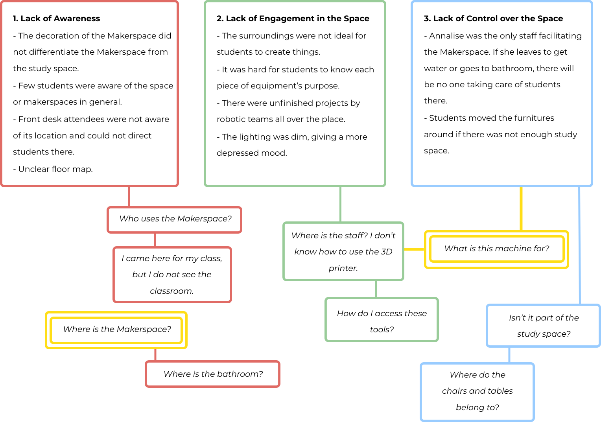

team
Shen
Freshman | Architecture
Chu
Freshman | Architecture
Hsu
Freshman | CivE
Freshman | Architecture
Freshman | Architecture
Our partnership with the Moffitt Makerspace consists of reimaging an amazing yet surprisingly unknown campus resource as an easy-access, comfortable, and inviting workspace for the UC Berkeley community to explore and hone in on their creativity.
duration
Spring '20 Semester
focus
Society
partner
Moffitt Library
tools
Figma, Adobe Suite, Zoom
Shen
Freshman | Architecture
Chu
Freshman | Architecture
Hsu
Freshman | CivE
Freshman | Architecture
Freshman | Architecture
Hello and welcome to our Moffitt Library Makerspace Project! We are Batu, Dan, Natalie, Sunny, Jeffrey, and Zulaika— a team of multi-disciplinary students across various majors, design experiences, and backgrounds from a club called Invention Corps Berkeley. We were offered the opportunity to reimagine the Moffitt Makerspace thanks to our mentors Nicole Brown and Annalise Philips. The Moffitt Makerspace (MM) is centered around collaborative and open workspaces for the entire UC Berkeley community to make and create regardless of design experience. After initial observations, we felt that the Moffitt Makerspace, as a resourceful space on campus, lacked a clear identity and prescence at Cal. Futhermore, the Moffitt Makerspace is positioned for renovation as the Connected Center for Learning among Moffitt Library’s 1st to 3rd floors so this was the perfect time to begin considering changes for the future. Thus, we have shaped our work and research for the long-term structural and systematic redesign of the MM.
Our team was then posed with the question “how might we redesign this space to attract broader user groups and potential creatives?” We targeted the broad action items of rebranding, maximizing awareness, expanding current user groups, and redesigning for spatial efficiency. Given the current COVID-19 pandemic, we have readjusted those goals to create a guide tailored to the specific needs of the MM, including various user interview guides, design suggestions, marketing strategies and resources, and an assets kit for future implementation.
As creative communities and individuals become of more accepted in an age of innovation, we feel there is a need to support environments that foster creativity and the users of those spaces. Creating a welcoming, easily accessible, and comfortable workspace for all communities at Cal regardless of background or skill-level is imperative to our team. For many of us, the Moffitt Makerspace is positioned as an invaluable reource for all communities on campus to explore the infinite oppurtunities of innovation.
In the first week, we visited the Moffitt Makerspace in person individually. We noted down our initial thoughts on the space and tried to identify key features. We noted that there are some problematic qualities of the space that we could address.
After listing out our observations, we categorized the problems and defined three major pain points:
Based on common questions that students encounter and our personal experiences, we listed three main “How might we” questions.
1. How might we give the Moffitt Makerspace an identity?
2. How might we increase students’ engagement of the Makerspace and of the workshops?
3. How might we maintain a balance between facilitating the function of the space and ensuring the creative freedom?
After defining the problem we wanted to tackle, an ideating session was held with all team members and mentors at the Makerspace. The process included idea regurgitation onto sticky notes by everyone, followed by arranging these ideas into different categories of potential solutions we want to pursue.
These categories included:
1. Wayfinding (improving ease of locating the makerspace, as well as increasing visibility)
2. Outreach (pursuing partnerships with other makerspaces and groups)
3. Physical Remodeling (addressing issues concerning layout and workflow of the Makerspace
4. Brand Identity (creating fliers, a map for the wall on floor 1 of Moffitt, and a brand identity)
5. Research (conducting interviews with users, makerspace experts, and other makerspaces)
Although we valued multi-facted approach, attempting to address all of these elements would prove to decrease the depth and quality of work overall. Thus, the team, along with the mentors voted for their top two categories, resulting in outreach, brand identity, and research receiving the most votes.
Sadly, the COVID-19 pandemic hit midway through the semester, obstructing our ability to interact with students or even access campus facilities (i.e. the Makerspace). Thus, conducting in-person interviews or using the vinyl cutter to print a map for the wall on Moffitt’s 1st floor were no longer feasible. Thus, the team shifted the project to still tackle these problems as best as we could. The map and brand designs would be created digitally, research procedures would be developed, and outreach leads would be collected, all handed to the project mentors as a guide for late use.
Based on our previous ideating sessions, we began ideating on several versions of signage and marketing deliverables for outreach. See below our progression from first drafts to final products. We first began with a solidified color theory. It was important to be for us in our work to be consistent in themes. As well, we wanted worked with the purple walls of Moffitt Library Floor 1 should the large-scale map be implemented on the wall. We applied a combination of our team’s suggestions into our prototypes and deliverables.

Following initial prototyping and the establishment of a clear and cohesive theme and color palette for the graphics, low-fidelity iterations of the final deliverables were created using Illustrator. During the following meetings, the designs were shared with the entire team for feedback. Team members gave their suggestions on all of the graphics, and iterations and improvements were then built around those suggestions.

Due to the COVID-19 Pandemic, a large part of our teams ability to empathize with users of the space was derailed. We would have liked to conduct interviews with designers at other Makerspaces, attend workshops at the Moffitt Makerspace, and speak with the students using this space to best guide the design changes we arrived at. In an effort to adapt to the circumstances surrounding the pandemic we instead provided procedural guidance to our mentors on how to carry out this crucial step of understanding the user.
Moving forward, the guide will be handed off to the mentors for future use alongside the redesigning of this space. The intent is for the mentors to utilize the guide for conducting interviews with current and potential users of the makerspace, as well as creators of other makerspaces. Furthermore, the guide outlines outreach opportunities with student groups, UC Berkeley Deparments, and other Makerspaces to create a network and community of designers on the UC Berkeley campus. The guide will also be a long-term resource during the redesigning of the Makerspace and of Moffitt Library’s first 3 floors in the next 2-3 years.
Below are words of reflection from each of the team members and mentors on this project:
.png)

Thank you to our wonderful mentors Nicole and Annalise, who have been so present and supportive from our very first ideating session to the final edits of our deliverables, including the Moffitt Makerspace Guide. You both have offered so much insight and guidance as to how we would approach such a broad issue on campus with tangible solutions. As well, thank you for extending this oppurtunity to us, as designers on campus, to reimagine a unique space within the UC Berkeley community. In such trying and confusing times, we could not have been more grateful to have worked on this project under your guidance. We truly hope that our shared efforts can assist your work in establishing and sustaining an creative crommunity for all.